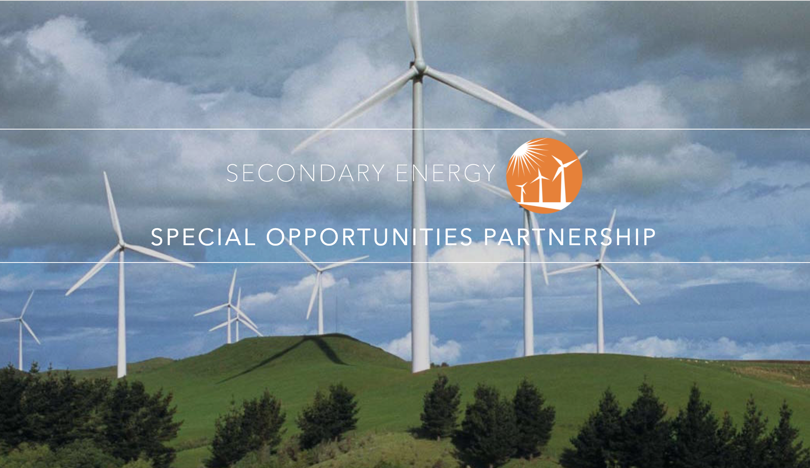

websites
Pendulum Advisors
SESOP

As the Lead Web Developer intern, I worked alongside a Product Manager intern to implement a completely new web-platform for a financial investment company located in Cape Town, South Africa. We acted as UX designers in creating wireframes and mock-ups and communicated back-and-forth with the business team. The project included front-end HTML/CSS/JavaScript and backend login/logout capabilities using AngularJS and Firebase.
Click on pictures to view website